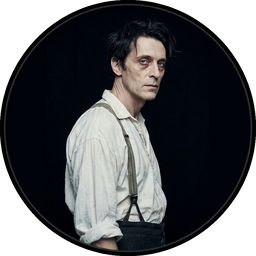

Cast of Characters
Click to hear their voice

1. The Horror in Clay.
1. The Horror in Clay.
The most merciful thing in the world, I think, is the inability of the human mind to correlate all its contents. We live on a placid island of ignorance in the midst of black seas of infinity, and it was not meant that we should voyage far. The sciences, each straining in its own direction, have hitherto harmed us little; but some day the piecing together of dissociated knowledge will open up such terrifying vistas of reality, and of our frightful position therein, that we shall either go mad from the revelation or flee from the deadly light into the peace and safety of a new dark age.
Theosophists have guessed at the awesome grandeur of the cosmic cycle wherein our world and human race form transient incidents. They have hinted at strange survivals in terms which would freeze the blood if not masked by a bland optimism. But it is not from them that there came the single glimpse of forbidden eons which chills me when I think of it and maddens me when I dream of it. That glimpse, like all dread glimpses of truth, flashed out from an accidental piecing together of separated things—in this case an old newspaper item and the notes of a dead professor. I hope that no one else will accomplish this piecing out; certainly, if I live, I shall never knowingly supply a link in so hideous a chain. I think that the professor, too, intended to keep silent regarding the part he knew, and that he would have destroyed his notes had not sudden death seized him.
My knowledge of the thing began in the winter of 1926-27 with the death of my grand-uncle, George Gammell Angell, Professor Emeritus of Semitic languages in Brown University, Providence, Rhode Island. Professor Angell was widely known as an authority on ancient inscriptions, and had frequently been resorted to by the heads of prominent museums; so that his passing at the age of ninety-two may be recalled by many. Locally, interest was intensified by the obscurity of the cause of death. The professor had been stricken whilst returning from the Newport boat; falling suddenly, as witnesses said, after having been jostled by a nautical-looking negro who had come from one of the queer dark courts on the precipitous hillside which formed a short cut from the waterfront to the deceased's home in Williams Street. Physicians were unable to find any visible disorder, but concluded after perplexed debate that some obscure lesion of the heart, induced by the brisk ascent of so steep a hill by so elderly a man, was responsible for the end. At the time I saw no reason to dissent from this dictum, but latterly I am inclined to wonder—and more than wonder.
As my granduncle's heir and executor, for he died a childless widower, I was expected to go over his papers with some thoroughness; and for that purpose moved his entire set of files and boxes to my quarters in Boston. Much of the material which I correlated will be later published by the American Archeological Society, but there was one box which I found exceedingly puzzling, and which I felt much averse from showing to other eyes. It had been locked, and I did not find the key till it occurred to me to examine the personal ring which the professor carried always in his pocket. Then, indeed, I succeeded in opening it, but when I did so seemed only to be confronted by a greater and more closely locked barrier. For what could be the meaning of the queer clay bas-relief and the disjointed jottings, ramblings, and cuttings which I found? Had my uncle, in his latter years, become credulous of the most superficial impostures? I resolved to search out the eccentric sculptor responsible for this apparent disturbance of an old man's peace of mind.
The bas-relief was a rough rectangle less than an inch thick and about five by six inches in area; obviously of modern origin. Its designs, however, were far from modern in atmosphere and suggestion; for, although the vagaries of cubism and futurism are many and wild, they do not often reproduce that cryptic regularity which lurks in prehistoric writing. And writing of some kind the bulk of these designs seemed certainly to be; though my memory, despite much familiarity with the papers and collections of my uncle, failed in any way to identify this particular species, or even hint at its remotest affiliations.
Above these apparent hieroglyphics was a figure of evidently pictorial intent, though its impressionistic execution forbade a very clear idea of its nature. It seemed to be a sort of monster, or symbol representing a monster, of a form which only a diseased fancy could conceive. If I say that my somewhat extravagant imagination yielded simultaneous pictures of an octopus, a dragon, and a human caricature, I shall not be unfaithful to the spirit of the thing. A pulpy, tentacled head surmounted a grotesque and scaly body with rudimentary wings; but it was the general outline of the whole which made it most shockingly frightful. Behind the figure was a vague suggestion of a Cyclopean architectural background.
The writing accompanying this oddity was, aside from a stack of press cuttings, in Professor Angell's most recent hand; and made no pretense to literary style. What seemed to be the main document was headed "CTHULHU CULT" in characters painstakingly printed to avoid the erroneous reading of a word so unheard-of. This manuscript was divided into two sections, the first of which was headed "1925—Dream and Dream Work of H. A. Wilcox, 7 Thomas St., Providence, R. I.," and the second, "Narrative of Inspector John R. Legrasse, 121 Bienville St., New Orleans, La., at 1908 A. A. S. Mtg—Notes on Same, & Prof. Webb's Acct." The other manuscript papers were all brief notes, some of them accounts of the queer dreams of different persons, some of them citations from theosophical books and magazines (notably W. Scott-Eliott's Atlantis and the Lost Lemuria), and the rest comments on long-surviving secret societies and hidden cults, with references to passages in such mythological and anthropological source-books as Frazer's Golden Bough and Miss Murray's Witch-Cult in Western Europe. The cuttings largely alluded to outré mental illnesses and outbreaks of group folly or mania in the spring of 1925.
The first half of the principal manuscript told a very peculiar tale. It appears that on March 1st, 1925, a thin, dark young man of neurotic and excited aspect had called upon Professor Angell bearing the singular clay bas-relief, which was then exceedingly damp and fresh. His card bore the name of Henry Anthony Wilcox, and my uncle had recognized him as the youngest son of an excellent family slightly known to him, who had latterly been studying sculpture at the Rhode Island School of Design and living alone at the Fleur-de-Lys Building near that institution. Wilcox was a precocious youth of known genius but great eccentricity, and had from childhood excited attention through the strange stories and odd dreams he was in the habit of relating. He called himself "psychically hypersensitive", but the staid folk of the ancient commercial city dismissed him as merely "queer". Never mingling much with his kind, he had dropped gradually from social visibility, and was now known only to a small group of esthetes from other towns. Even the Providence Art Club, anxious to preserve its conservatism, had found him quite hopeless.
On the occasion of the visit, ran the professor's manuscript, the sculptor abruptly asked for the benefit of his host's archeological knowledge in identifying the hieroglyphics on the bas-relief. He spoke in a dreamy, stilted manner which suggested pose and alienated sympathy; and my uncle showed some sharpness in replying, for the conspicuous freshness of the tablet implied kinship with anything but archeology. Young Wilcox's rejoinder, which impressed my uncle enough to make him recall and record it verbatim, was of a fantastically poetic cast which must have typified his whole conversation, and which I have since found highly characteristic of him. He said, "It is new, indeed, for I made it last night in a dream of strange cities; and dreams are older than brooding Tyre, or the contemplative Sphinx, or garden-girdled Babylon."
It was then that he began that rambling tale which suddenly played upon a sleeping memory and won the fevered interest of my uncle. There had been a slight earthquake tremor the night before, the most considerable felt in New England for some years; and Wilcox's imagination had been keenly affected. Upon retiring, he had had an unprecedented dream of great Cyclopean cities of Titan blocks and sky-flung monoliths, all dripping with green ooze and sinister with latent horror. Hieroglyphics had covered the walls and pillars, and from some undetermined point below had come a voice that was not a voice; a chaotic sensation which only fancy could transmute into sound, but which he attempted to render by the almost unpronounceable jumble of letters, "Cthulhu fhtagn".
This verbal jumble was the key to the recollection which excited and disturbed Professor Angell. He questioned the sculptor with scientific minuteness; and studied with almost frantic intensity the bas-relief on which the youth had found himself working, chilled and clad only in his nightclothes, when waking had stolen bewilderingly over him. My uncle blamed his old age, Wilcox afterward said, for his slowness in recognizing both hieroglyphics and pictorial design. Many of his questions seemed highly out of place to his visitor, especially those which tried to connect the latter with strange cults or societies; and Wilcox could not understand the repeated promises of silence which he was offered in exchange for an admission of membership in some widespread mystical or paganly religious body. When Professor Angell became convinced that the sculptor was indeed ignorant of any cult or system of cryptic lore, he besieged his visitor with demands for future reports of dreams. This bore regular fruit, for after the first interview the manuscript records daily calls of the young man, during which he related startling fragments of nocturnal imagery whose burden was always some terrible Cyclopean vista of dark and dripping stone, with a subterrene voice or intelligence shouting monotonously in enigmatical sense-impacts uninscribable save as gibberish. The two sounds most frequently repeated are those rendered by the letters "Cthulhu" and "R'lyeh".
On March 23rd, the manuscript continued, Wilcox failed to appear; and inquiries at his quarters revealed that he had been stricken with an obscure sort of fever and taken to the home of his family in Waterman Street. He had cried out in the night, arousing several other artists in the building, and had manifested since then only alternations of unconsciousness and delirium. My uncle at once telephoned the family, and from that time forward kept close watch of the case; calling often at the Thayer Street office of Dr. Tobey, whom he learned to be in charge. The youth's febrile mind, apparently, was dwelling on strange things; and the doctor shuddered now and then as he spoke of them. They included not only a repetition of what he had formerly dreamed, but touched wildly on a gigantic thing "miles high" which walked or lumbered about. He at no time fully described this object, but occasional frantic words, as repeated by Dr. Tobey, convinced the professor that it must be identical with the nameless monstrosity he had sought to depict in his dream-sculpture. Reference to this object, the doctor added, was invariably a prelude to the young man's subsidence into lethargy. His temperature, oddly enough, was not greatly above normal; but the whole condition was otherwise such as to suggest true fever rather than mental disorder.
On April 2nd at about 3 p. m. every trace of Wilcox's malady suddenly ceased. He sat upright in bed, astonished to find himself at home and completely ignorant of what had happened in dream or reality since the night of March 22nd. Pronounced well by his physician, he returned to his quarters in three days; but to Professor Angell he was of no further assistance. All traces of strange dreaming had vanished with his recovery, and my uncle kept no record of his night-thoughts after a week of pointless and irrelevant accounts of thoroughly usual visions.
Here the first part of the manuscript ended, but references to certain of the scattered notes gave me much material for thought—so much, in fact, that only the ingrained skepticism then forming my philosophy can account for my continued distrust of the artist. The notes in question were those descriptive of the dreams of various persons covering the same period as that in which young Wilcox had had his strange visitations. My uncle, it seems, had quickly instituted a prodigiously far-flung body of inquiries amongst nearly all the friends whom he could question without impertinence, asking for nightly reports of their dreams, and the dates of any notable visions for some time past. The reception of his request seems to have been varied; but he must, at the very least, have received more responses than any ordinary man could have handled without a secretary. This original correspondence was not preserved, but his notes formed a thorough and really significant digest. Average people in society and business—New England's traditional "salt of the earth"—gave an almost completely negative result, though scattered cases of uneasy but formless nocturnal impressions appear here and there, always between March 23rd and April 2nd—the period of young Wilcox's delirium. Scientific men were little more affected, though four cases of vague description suggest fugitive glimpses of strange landscapes, and in one case there is mentioned a dread of something abnormal.
It was from the artists and poets that the pertinent answers came, and I know that panic would have broken loose had they been able to compare notes. As it was, lacking their original letters, I half suspected the compiler of having asked leading questions, or of having edited the correspondence in corroboration of what he had latently resolved to see. That is why I continued to feel that Wilcox, somehow cognizant of the old data which my uncle had possessed, had been imposing on the veteran scientist. These responses from esthetes told a disturbing tale. From February 28th to April 2nd a large proportion of them had dreamed very bizarre things, the intensity of the dreams being immeasurably the stronger during the period of the sculptor's delirium. Over a fourth of those who reported anything, reported scenes and half-sounds not unlike those which Wilcox had described; and some of the dreamers confessed acute fear of the gigantic nameless thing visible toward the last. One case, which the note describes with emphasis, was very sad. The subject, a widely known architect with leanings toward theosophy and occultism, went violently insane on the date of young Wilcox's seizure, and expired several months later after incessant screamings to be saved from some escaped denizen of hell. Had my uncle referred to these cases by name instead of merely by number, I should have attempted some corroboration and personal investigation; but as it was, I succeeded in tracing down only a few. All of these, however, bore out the notes in full. I have often wondered if all the objects of the professor's questioning felt as puzzled as did this fraction. It is well that no explanation shall ever reach them.
The press cuttings, as I have intimated, touched on cases of panic, mania, and eccentricity during the given period. Professor Angell must have employed a cutting bureau, for the number of extracts was tremendous, and the sources scattered throughout the globe. Here was a nocturnal suicide in London, where a lone sleeper had leaped from a window after a shocking cry. Here likewise a rambling letter to the editor of a paper in South America, where a fanatic deduces a dire future from visions he has seen. A dispatch from California describes a theosophist colony as donning white robes en masse for some "glorious fulfilment" which never arrives, whilst items from India speak guardedly of serious native unrest toward the end of March. Voodoo orgies multiply in Haiti, and African outposts report ominous mutterings. American officers in the Philippines find certain tribes bothersome about this time, and New York policemen are mobbed by hysterical Levantines on the night of March 22-23. The west of Ireland, too, is full of wild rumor and legendry, and a fantastic painter named Ardois-Bonnot hangs a blasphemous Dream Landscape in the Paris spring salon of 1926. And so numerous are the recorded troubles in insane asylums that only a miracle can have stopped the medical fraternity from noting strange parallelisms and drawing mystified conclusions. A weird bunch of cuttings, all told; and I can at this date scarcely envisage the callous rationalism with which I set them aside. But I was then convinced that young Wilcox had known of the older matters mentioned by the professor.